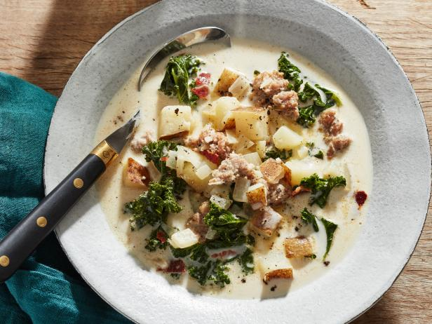

Zuppa Toscana

A hearty bowl of potatoes, sausage, kale, and milk based broth. Perfect for a cold winter morning or just to feel like home. Add some chili flakes or bacon for a little extra flavor.
Ingredients
- 1 tablespoon olive oil
- 1 lbs. bulk Italian sausage
- 1 large onion, chopped
- 4 cloves of garlic, minced
- 1 tablespoon Italian seasoning
- 1/2 tablespoon salt
- 1/2 tablespoon ground black pepper
- 4 medium potatoes, cubed
- 4 cups chicken broth
- 4 cups kale, chopped
- 1 cup half-and-half
- 1/4 teaspoon chili flakes, optional
Steps
- Turn on a multi-functional pressure cooker (such as Instant Pot®) and select Saute function.
- Heat oil in the cooker. Add sausage and cook until no longer pink, about 3 minutes. Stir in onion and garlic; cook until softened and translucent, about 3 minutes. Stir in Italian seasoning, salt, pepper, and red pepper flakes. Add potatoes and
chicken broth. Close and lock the lid. Select high pressure and set timer for 5 minutes. Allow 10 to 15 minutes for pressure to build.
- Release pressure using the natural-release method according to manufacturer's instructions, 10 to 40 minutes. Unlock and remove the lid.
- Stir kale into the cooker. Select Saute function. Cook, uncovered, for 2 minutes. Stir in half-and-half. Turn off the cooker and serve.